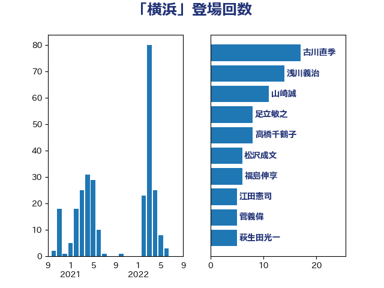

単語「横浜」

| 古川直季 | 自由民主党 | 17 回 |
| 浅川義治 | 日本維新の会 | 14 回 |
| 山崎誠 | 立憲民主党 | 11 回 |
| 足立敏之 | 自由民主党 | 8 回 |
| 高橋千鶴子 | 日本共産党 | 8 回 |
| 松沢成文 | 日本維新の会 | 6 回 |
| 福島伸享 | 無所属 | 6 回 |
| 江田憲司 | 立憲民主党 | 5 回 |
| 菅義偉 | 自由民主党 | 5 回 |
| 萩生田光一 | 自由民主党 | 5 回 |
| 長浜博行 | 無所属 | 5 回 |
| 小泉進次郎 | 自由民主党 | 4 回 |
| 斉藤鉄夫 | 公明党 | 4 回 |
| 稲富修二 | 立憲民主党 | 4 回 |
| 阿部知子 | 立憲民主党 | 4 回 |
| 佐々木さやか | 公明党 | 3 回 |
| 務台俊介 | 自由民主党 | 3 回 |
| 室井邦彦 | 日本維新の会 | 3 回 |
| 森山浩行 | 立憲民主党 | 3 回 |
| 滝波宏文 | 自由民主党 | 3 回 |
| 西村康稔 | 自由民主党 | 3 回 |
| 青木愛 | 立憲民主党 | 3 回 |
| 青柳陽一郎 | 立憲民主党 | 3 回 |
| 中西健治 | 自由民主党 | 2 回 |
| 倉林明子 | 日本共産党 | 2 回 |
| 岩本剛人 | 自由民主党 | 2 回 |
| 後藤祐一 | 立憲民主党 | 2 回 |
| 森屋隆 | 立憲民主党 | 2 回 |
| 水岡俊一 | 立憲民主党 | 2 回 |
| 渡辺猛之 | 自由民主党 | 2 回 |
| 田村憲久 | 自由民主党 | 2 回 |
| 野田佳彦 | 立憲民主党 | 2 回 |
| 三浦信祐 | 公明党 | 1 回 |
| 上田清司 | 国民民主党 | 1 回 |
| 中島克仁 | 立憲民主党 | 1 回 |
| 中野英幸 | 自由民主党 | 1 回 |
| 串田誠一 | 日本維新の会 | 1 回 |
| 井上哲士 | 日本共産党 | 1 回 |
| 古屋範子 | 公明党 | 1 回 |
| 吉田宣弘 | 公明党 | 1 回 |
| 塩川鉄也 | 日本共産党 | 1 回 |
| 大島敦 | 立憲民主党 | 1 回 |
| 大西英男 | 自由民主党 | 1 回 |
| 太栄志 | 立憲民主党 | 1 回 |
| 山際大志郎 | 自由民主党 | 1 回 |
| 岡本あき子 | 立憲民主党 | 1 回 |
| 岬麻紀 | 日本維新の会 | 1 回 |
| 島村大 | 自由民主党 | 1 回 |
| 朝日健太郎 | 自由民主党 | 1 回 |
| 末松信介 | 自由民主党 | 1 回 |
| 本田顕子 | 自由民主党 | 1 回 |
| 杉尾秀哉 | 立憲民主党 | 1 回 |
| 杉本和巳 | 日本維新の会 | 1 回 |
| 柴田巧 | 日本維新の会 | 1 回 |
| 横山信一 | 公明党 | 1 回 |
| 橋本岳 | 自由民主党 | 1 回 |
| 橋本聖子 | 無所属 | 1 回 |
| 泉田裕彦 | 自由民主党 | 1 回 |
| 浅田均 | 日本維新の会 | 1 回 |
| 浦野靖人 | 日本維新の会 | 1 回 |
| 渡辺周 | 立憲民主党 | 1 回 |
| 田中英之 | 自由民主党 | 1 回 |
| 福重隆浩 | 公明党 | 1 回 |
| 空本誠喜 | 日本維新の会 | 1 回 |
| 紙智子 | 日本共産党 | 1 回 |
| 藤木眞也 | 自由民主党 | 1 回 |
| 西野太亮 | 自由民主党 | 1 回 |
| 赤羽一嘉 | 公明党 | 1 回 |
| 辻元清美 | 立憲民主党 | 1 回 |
| 鈴木敦 | 国民民主党 | 1 回 |
| 青柳仁士 | 日本維新の会 | 1 回 |
| 音喜多駿 | 日本維新の会 | 1 回 |
| 高木啓 | 自由民主党 | 1 回 |
| 高野光二郎 | 自由民主党 | 1 回 |